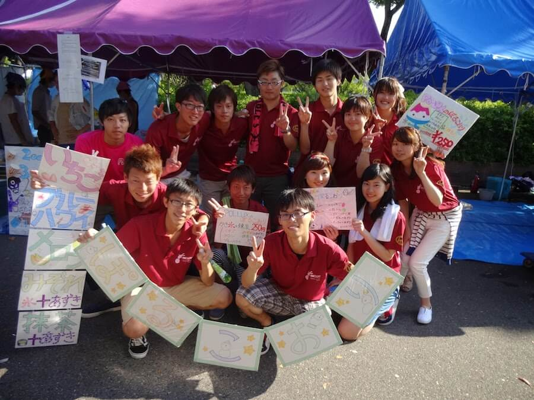
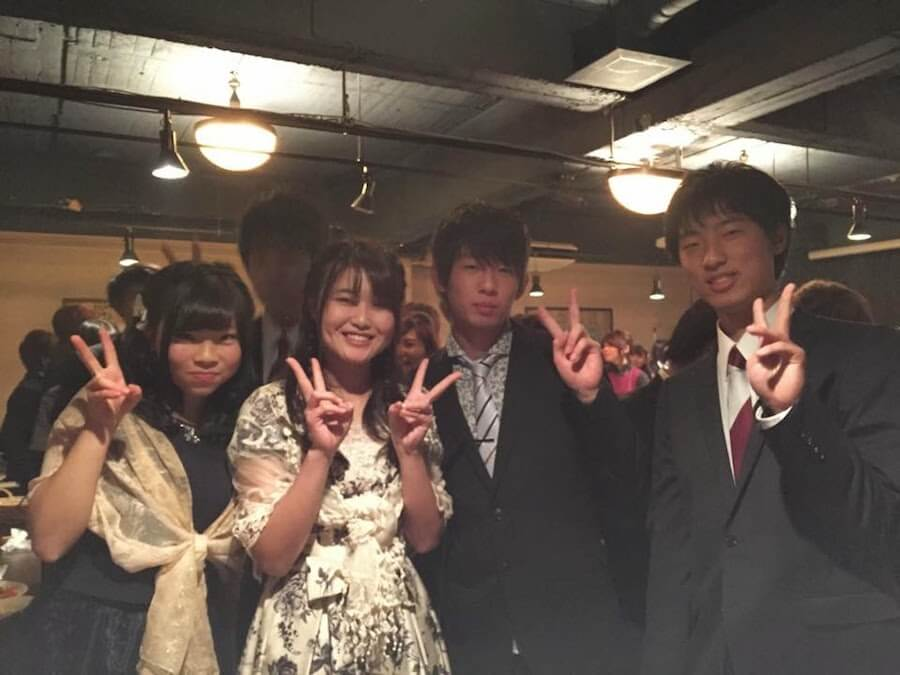
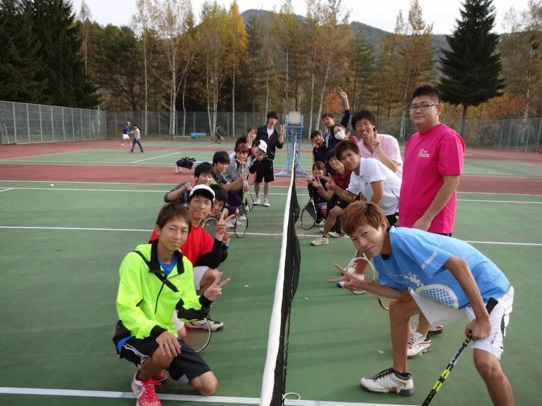

サークルイメージ
新歓合宿
青空のもとで楽しくテニス。大学最初の思い出をここで残そう:)
BBQ
毎年5月にはバーベキュー！初めましての新入生もここで先輩や同級生と肉を食べて仲良くなれちゃう！？

名大祭
毎年6月に開かれる名大祭に出店！年によってかき氷とかフランクフルトとか、楽しく作って盛り上がろう！

春一 ミックス
他のサークルとのミックスと呼ばれる男女ペアで試合！男子諸君、かっこいいところを見せ付けられるかも

追いコン
お世話になった先輩を送る会。おしゃれな場所で楽しく美味しいものを(^○^)
自由気まま
合宿先できれいな空気を吸いながら寝転がるっていいよね。自由に過ごそう

クリコン
毎年12月は男子はスーツ、女子はおしゃれに！リッチに立食パーティを楽しい
冬合宿
スノボ合宿。冬の合宿は長野でテニスしないでスノボしよう！こけて上達あるのみ

秋合宿
紅葉めいてきた長野で楽しくテニス。サークル内で試合して、豪華な賞品もあるよ！？
ビギナーズ
初心者だけの試合も！初心者はここで活躍して、他サークルに勝とう(^O^)

ボーリング大会
自主企画のボーリング大会。提案して楽しくボーリングするのもいいよね。賞品もあったし